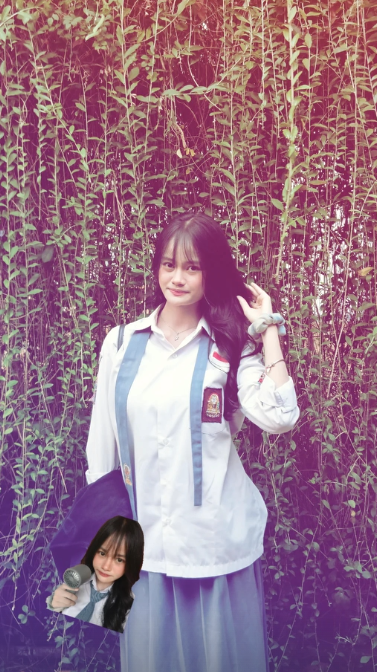

Aku dari dulu ga pernah nyangka kalo bisa deket sama kamu kak kett, namun untungnya kita bisa menjadi sangat sedekat ini hehee..
Walau dari dulu kita ga pernah interaksi sama sekali, tapi Tuhan selalu mempertemukan kita dengan kebaikan yang selalu menyertai, amin.
you are a perpetual feeling."
Tapi terkadang, aku ngerasa takut lu risih sih ketrin. Namun pada intinya, tinggal lebih lama, ya?
Kidung Agung 4:7
"Engkau cantik sekali, manisku, tak ada cacat cela padamu."
just by being in it."
Terima kasih untuk semua hal kecil yang walau itu ga berarti, padahal itu semua berarti banget buat aku.

"She don't know She's beautiful, though time and time I've told her so."
Bercanda yaa KETRINNNNN, WWKWKW.
Kevin Sanjaya. ♡